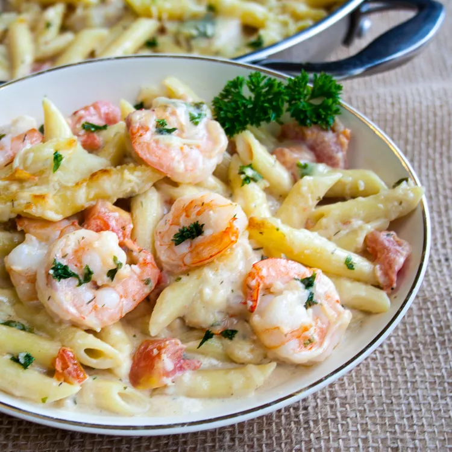

Garlic Shrimp Pasta Baked

An easy to follow recipe for a pasta with garlic and shrimp
This shrimp casserole with noodles is quick and easy.
With shrimp and pasta coated in a creamy herb sauce,
this seafood pasta bake is a meal the whole family will love.
Recipe
- 1 (10 ounce) package penne pasta
- 3 tablespoons butter, divided
- 1 teaspoon vegetable oil
- 1 tablespoon minced garlic
- 1 pound uncooked medium shrimp, peeled and deveined
- 3 tablespoons chopped fresh parsley, divided
- 2 teaspoons chopped fresh dill
Steps
- Preheat the oven to 350 degrees F (175 degrees C).
- Bring a large pot of lightly salted water to a boil. Add penne and cook, stirring occasionally, until tender yet firm to the bite, about 11 minutes. Drain and set aside until needed.
- While the pasta is cooking, heat 1 tablespoon butter and oil in a large oven-safe skillet over medium heat. Add garlic and cook until fragrant, about 30 seconds. Add shrimp, 2 tablespoons parsley, and dill; cook until shrimp are bright pink on the outside and the meat is opaque, 1 1/2 to 2 minutes per side. Transfer shrimp to a plate, leaving any cooking juices in the pan.
- Melt remaining 2 tablespoons butter in the skillet over medium heat. Whisk in flour until fully combined and starting to turn golden, 30 seconds to 1 minute. Whisk in chicken broth until combined, then repeat with milk. Stir in tomatoes, lemon juice, salt, and pepper; bring to a simmer.
- Add 1/2 cup Parmesan and Romano; stir until cheeses begin to melt and sauce is creamy. Add 1 tablespoon mozzarella cheese, then mix in 1/2 of the cooked pasta. Add more pasta if there is enough sauce to coat it. Stir in shrimp, then top with remaining mozzarella, Parmesan, and parsley.
- Bake in the preheated oven until golden on top and bubbling around the edges, 8 to 10 minutes.
Wedding Gift Spaghetti Sauce
An easy to follow recipe for a pasta with garlic and shrimp
This recipe was given to me as part of a wedding gift recipe collection from a very dear friend. It is rich, aromatic, flavorful and makes A LOT. So please grab the biggest pot you can find. I mean REALLY BIG. Extra sauce freezes well for future pasta dishes.
Recipe
- ½ cup butter
- 3 tablespoons olive oil
- 1 large onion, chopped
- 3 cloves garlic, chopped
- 1 pound ground beef
- 1 pound mild sausage
- 4 teaspoons Italian seasoning
Steps
- Heat butter and olive oil together with onion and garlic in a large pot over medium heat; cook and stir ground beef and sausage in the onion mixture until browned and crumbly, 10 to 15 minutes. Stir Italian seasoning, salt, rosemary, oregano, and black pepper into ground beef-sausage mixture; simmer for 20 minutes.
- Pour water, tomato puree, and tomato paste into ground beef-sausage mixture; simmer, stirring occasionally, over low heat until flavors have combined, at least 2 hours.
The Best Baked Ziti
An easy to follow recipe for a pasta with garlic and shrimp
Simply the best baked ziti recipe. I am half Italian, was raised eating the finest Italian-American cuisine, and have filmed almost 2,000 recipe videos, so when you consider all of those facts, it seems incredible that I have never posted a video for baked ziti. Hopefully I make up for that long wait by posting what I think is the best version of it..
Recipe
- ¾ pound hot Italian sausage
- ¾ pound sweet Italian sausage
- 2 tablespoons olive oil
- 1 large yellow onion, diced
- ½ teaspoon dried oregano
- ¼ teaspoon dried thyme
- ¼ teaspoon dried rosemary
Steps
- Cut down the length of each sausage with a sharp knife. Remove and discard casings.
- Heat olive oil in a large saucepan set over high heat. Add sausages and onion. Cook, stirring occasionally and breaking up with a spatula, until sausage begins to brown, and onion turns translucent, 5 to 7 minutes. Add oregano, thyme, and rosemary and cook for 1 minute more. Pour in marinara sauce. Pour 1 cup water into each jar to rinse out remaining sauce; add to the saucepan. Stir together and bring sauce to a simmer.
- Reduce the heat to medium-low, and let simmer, stirring occasionally, for 1 hour. Taste for seasoning and adjust if needed. Turn off heat and reserve until needed. Before using, skim any excess fat that rises to the surface.
- While sauce simmers, bring a large pot of generously salted water to a boil. Add ziti and cook, stirring occasionally, for 1 or 2 minutes less than the directions on the package call for, about 8 minutes. Drain well and transfer into a large mixing bowl.
- Carefully add the meat sauce and stir until thoroughly combined. Let rest for 5 minutes.
- Meanwhile, preheat the oven to 375 degrees F (190 degrees C). Grease a large 9x15-inch or 9x13-inch casserole dish with a drizzle of olive oil.
- Bake in the center of the preheated oven until the cheese is melted and the casserole is piping hot, 30 to 35 minutes. Remove from the oven and let cool 10 to 15 minutes before serving. Top with parsley.